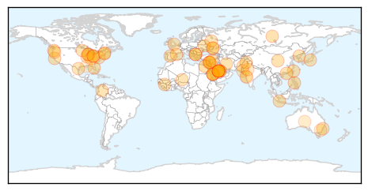
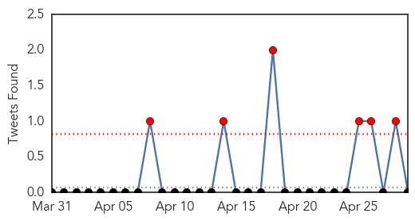
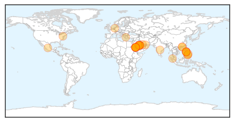

Unknown
30-Day Web Trend
0 alerts, 0 warnings
30-Day Twitter Trend
4 alerts, 0 warnings
Article Locations
Article Confidences
Top Articles:
- 0.999
- Egypt reports first case of Mers virus
- 0.998
- Avoid camels to escape MERS, warns Saudi minister
- 0.998
- Scientists find MERS virus antibodies that may lead to treatments
- 0.997
- Saudi Arabia Takes Measures Further
- 0.989
- Yup, camels can catch MERS, new study says
- 0.988
- MERS antibodies discovered, as alert over virus heightens
- 0.988
- U.S. Experts Declare Progress in Search for MERS Treatment — Naharnet
- 0.985
- Montgomery County girl's diphtheria case first in years
- 0.984
- US scientists declare progress in search for MERS cure
- 0.984
- US experts see progress in search for MERS treatment
- 0.982
- MERS Virus source traced to camels
- 0.973
- US experts declare progress in search for MERS treatment
- 0.917
- Indonesian Dies of MERS in Saudi Arabia
- 0.917
- Chicago Tribune
- 0.917
- Chicago Tribune
- 0.917
- Chicago Tribune
- 0.917
- Chicago Tribune
- 0.917
- Chicago Tribune
- 0.917
- Chicago Tribune
- 0.917
- Chicago Tribune
- 0.917
- Chicago Tribune
- 0.917
- Chicago Tribune
- 0.917
- Chicago Tribune
- 0.917
- Chicago Tribune
- 0.917
- Chicago Tribune
- 0.917
- Chicago Tribune
- 0.917
- Chicago Tribune
- 0.917
- Chicago Tribune
- 0.910
- The world windows to Thailand
- 0.901
- Scarlet fever: Sounds scary but not much cause for concern, thanks to antibiotics
- 0.893
- الاخبار المصورة
- 0.883
- KRNV, Reno, NV
- 0.883
- KRNV, Reno, NV
- 0.883
- KRNV, Reno, NV
- 0.866
- News, Information and Connections for Action
- 0.866
- Kerry says NATO territory inviolable
- 0.866
- Seven dead after blasts at Siberia munition depot-statement
- 0.866
- Gunmen open fire on police HQ in east Ukrainian city-witness
- 0.866
- Pro-Russian activists storm the regional government headquarters in Luhansk
- 0.866
- Chemical weapons watchdog to investigate claims of chlorine gas attacks in Syria
- 0.866
- Car bombs kill at least 37 in Syria's Homs
- 0.866
- A boy looks through a telescope to try and see a partial solar eclipse from Sydney's Observatory Hill
- 0.866
- Twelve killed in Damascus mortar attack
- 0.866
- Gazprom says any further sanctions could hit business
- 0.866
- Students demonstrators take cover from tear gas during a protest supporting an agriculture nation wide strike in Bogota
- 0.848
- Dr. Tilman Richards is Now Accepting Patients for Laser Gum Surgery from Kingsville, TX
- 0.846
- Lebanon on the brink
- 0.841
- Incidence of gastro on the rise
- 0.819
- Mark Rutherford Upper School student diagnosed with scarlet fever
- 0.818
- Equine Herpes Virus confirmed in NE Kansas horse
Showing top 50 articles...
Top Tweets:
- 0.693
- New study: Complete genome sequence of MERS virus from SA camels found identical to human MERS virus. http://t.co/YMDp8eAKOj
- 0.682
- New study from Ian Lipkin’s team: Complete genome seq of MERS virus from SA camels found identical to human virus. http://t.co/YMDp8eAKOj
- 0.524
- RT: Novavax human respiratory syncytial virus (HRSV) vaccine shows positive results http://t.co/Z85clEgFCe
MERS
30-Day Web Trend
23 alerts, 0 warnings

30-Day Twitter Trend
9 alerts, 0 warnings

Article Locations
Article Confidences

Top Articles:
- 1.000
- Saudis: At least 14 new cases of MERS virus
- 1.000
- Nuevo brote del Síndrome Respiratorio del Medio Oriente.
- 0.999
- Indonesian allegedly contracts MERS-CoV in Saudi Arabia
- 0.999
- Saudi Arabia struggles to contain deadly virus, Egypt reports first case
- 0.999
- MERS Cases Spike As Virus Makes First Appearance In Egypt
- 0.999
- Qatar steps up vigilance on Mers
- 0.998
- As MERS Infections Rise, Asia Reflects on SARS
- 0.998
- Two Separate Studies On MERS-Coronavirus Offer Better Understanding Of Newly Emerging Disease
- 0.998
- Arabian Peninsula Infection:Dangerous Mers-virus spreads faster / Breaking News
- 0.998
- Camels Most Likely Spreading Deadly MERS Virus in Saudi Arabia
- 0.998
- MERS virus from camels and humans called indistinguishable
- 0.997
- Amid MERS Worries, Saudi Arabia Advise Citizens Against Camel Products
- 0.997
- And then there were 10, as DOH continues search for Etihad passengers
- 0.996
- Egypt reports first case of MERS virus
- 0.993
- Chinese team's breakthrough may help fight deadly Mers virus
- 0.992
- Columbia researchers extract live MERS coronavirus from Dromedary camels
- 0.991
- Study: MERS-CoV from Saudi camels matches human isolates
- 0.990
- Pilgrims asked to exercise caution against Coronavirus
- 0.989
- MERS-infected Indonesian dies
- 0.988
- Live virus implicates camels in MERS outbreak
- 0.988
- 10 yet to test for corona virus
- 0.987
- Headlines, News, The Philippine Star
- 0.986
- MERS incubation period ends; 10 Etihad passengers untracked
- 0.986
- PH checking reports 3 Filipino nurses in Saudi, UAE contracted MERS-CoV
- 0.982
- Ministry issues warning on MERS
- 0.981
- MERS Virus Found in Saudi Camels
- 0.979
- Doctors find promising MERS-blocking antibodies
- 0.978
- Negros Oriental
- 0.974
- Saudi MERS death toll passes 100 markHealthcare
- 0.974
- 3 new MERS deaths in Saudi Arabia bring total to 105 Bhatkallys.com
- 0.971
- Freeman Opinion, The Freeman Sections, The Freeman
- 0.968
- No New MERS Cases in Greece – Man Home from Gulf Clear
- 0.952
- Greek man returning from Persian Gulf cleared for MERS
- 0.951
- Cebu News, The Freeman Sections, The Freeman
- 0.903
- Saudi camel tradition may hinder control of MERS
- 0.734
- Saudi Health Minister, Adel Faqih, warns against consuming camel meat and milk
Top Tweets:
-
No tweets found for Apr 29, 2014